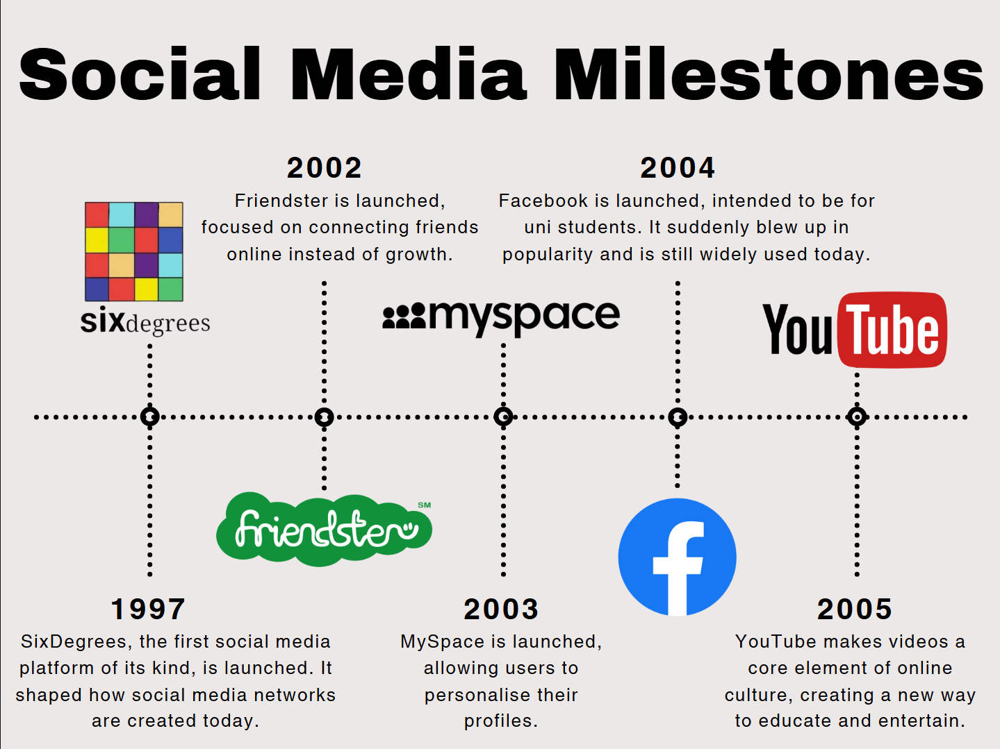

Home
Computer and Social Networks
ARPANET
Bandwidth
The Binary System
Bits, Bytes, Kilobytes and Megabytes
Internet of Me/Internet of Things
Entities in a Social Network
Relationships in a Social Network
Events in a Social Network
Sociograms
Network Hardware
Nodes
Hubs
Routers
Switches
Wireless Access Points
Servers
Transmission Media
UTP Cables
Copper Wire
Coaxial Cables
Fiber Optic Cables
Wi-Fi
Cellular Network
Satellite
Bluetooth
Zigbee, Z-Wave and Matter
Topologies and Navigation Maps
LANs vs WANs
Client-Server Model
Bus Topology
Star Topology
Ring Topology
Mesh Topology
Hybrid Topology
Navigation Maps
Data Processing and Transmission
What is Handshaking?
DNS
TCP/IP
FTP
HTML and HTTP and HTTPS
IP Address vs Mac Address
Network Security
Types of Malware
Social Engineering
Protecting Yourself from Cybercrimes
Social Network Case Study
Social Media Milestones
Comparing Content
Discord Pros and Cons
SOCIAL MEDIA CASE STUDY
Return To Top

Comparison Between Online Content from 20 Years Ago and the Present
Pros and Cons of Discord